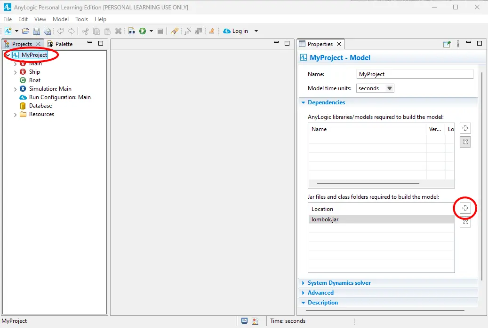
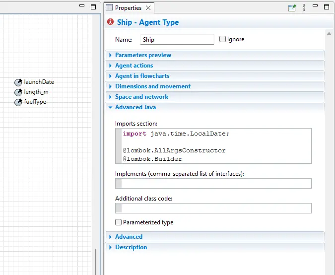
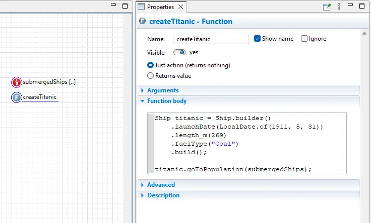

Lombok in AnyLogic
Installation
Project Lombok can do code generation to improve the experience of working with Java code. It can add common patterns like builder classes, value classes, null checks, and getters.
To use it in AnyLogic:
1. Download lombok.jar and
place it in the AnyLogic directory, for example
C:\Program Files\AnyLogic 8.9 Personal Learning Edition\lombok.jar
2. Add the line below to AnyLogic.ini in the same directory. To do this in
Windows, run notepad as Administrator and then navigate to the file via
"File" > "Open".
-javaagent:./lombok.jarAnyLogic.ini should look like this:
-vmargs
-Xmx4096M
-Djava.util.Arrays.useLegacyMergeSort=true
--add-modules=ALL-SYSTEM
-Dorg.eclipse.e4.ui.css.theme.disableOSDarkThemeInherit=true
-Dsun.java2d.ddscale=true
-Dsun.java2d.translaccel=true
--add-exports=java.base/jdk.internal.ref=ALL-UNNAMED
-javaagent:./lombok.jar3. Add lombok.jar to your project's dependencies.

4. If you have a custom launch script (.bat, .sh) it may not find
lombok.jar. To fix it you can place the launch script in the AnyLogic
directory.
set CLIENT_ID=xxx
set CLIENT_SECRET=xxx
Anylogic.exe5. You can now use the annotations in your project.
Using @Builder for Agents
You may want to use Lombok outside of plain Java code. To create a builder class for an Agent, add these annotations to the bottom of the imports section of that Agent:
@lombok.AllArgsConstructor
@lombok.Builder
Use it like so:
